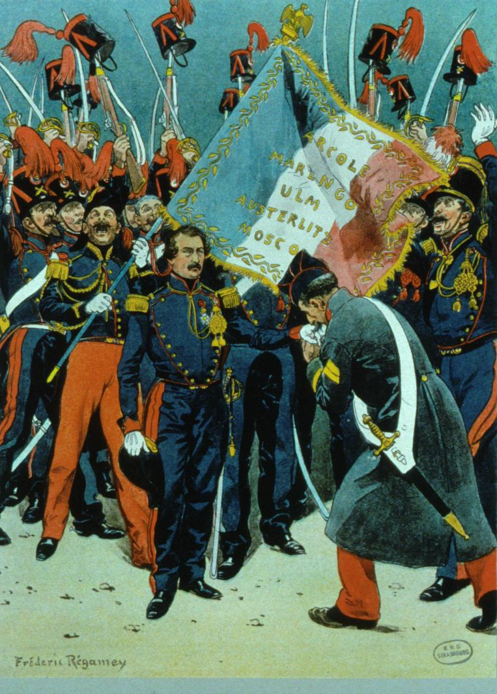
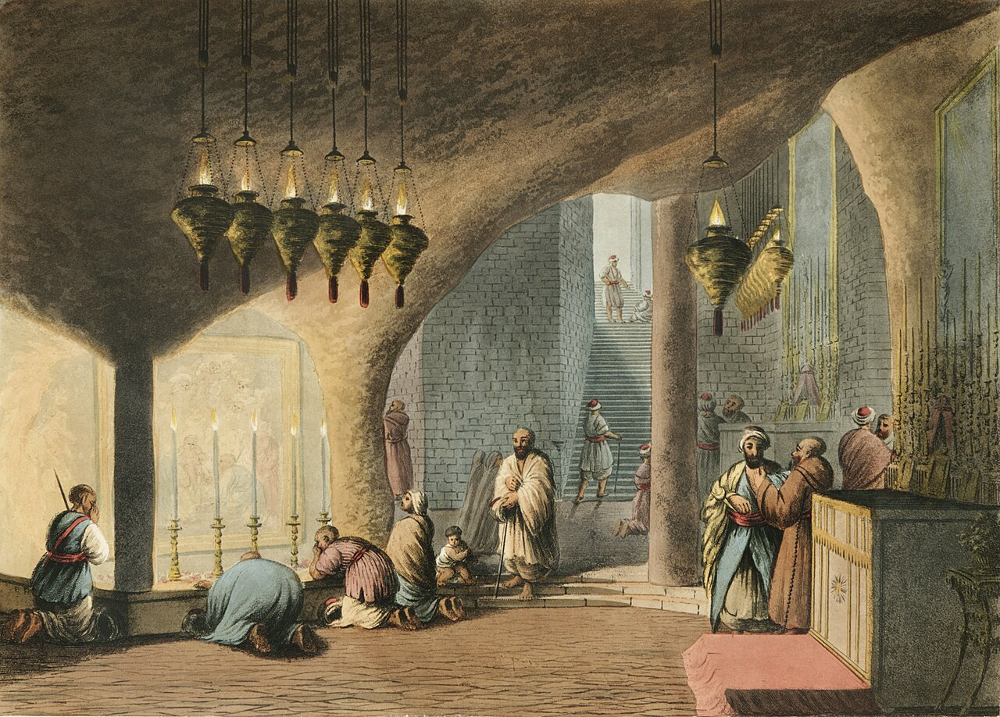
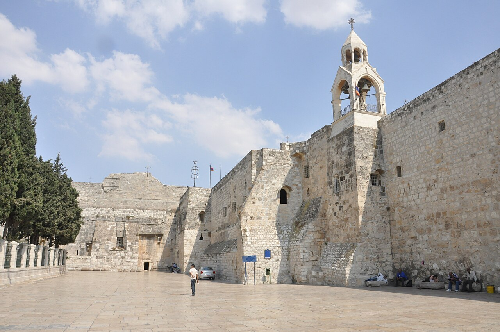
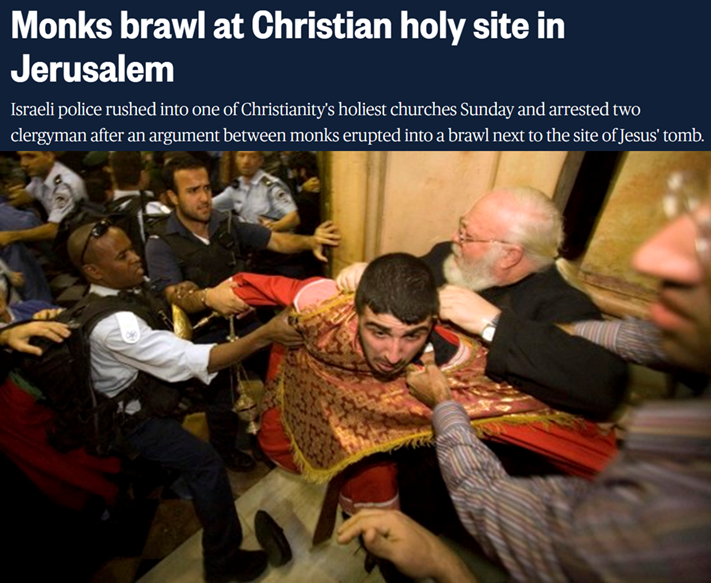
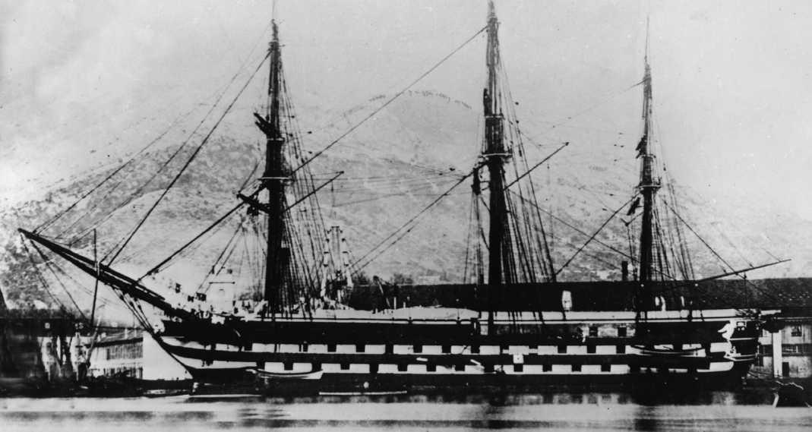
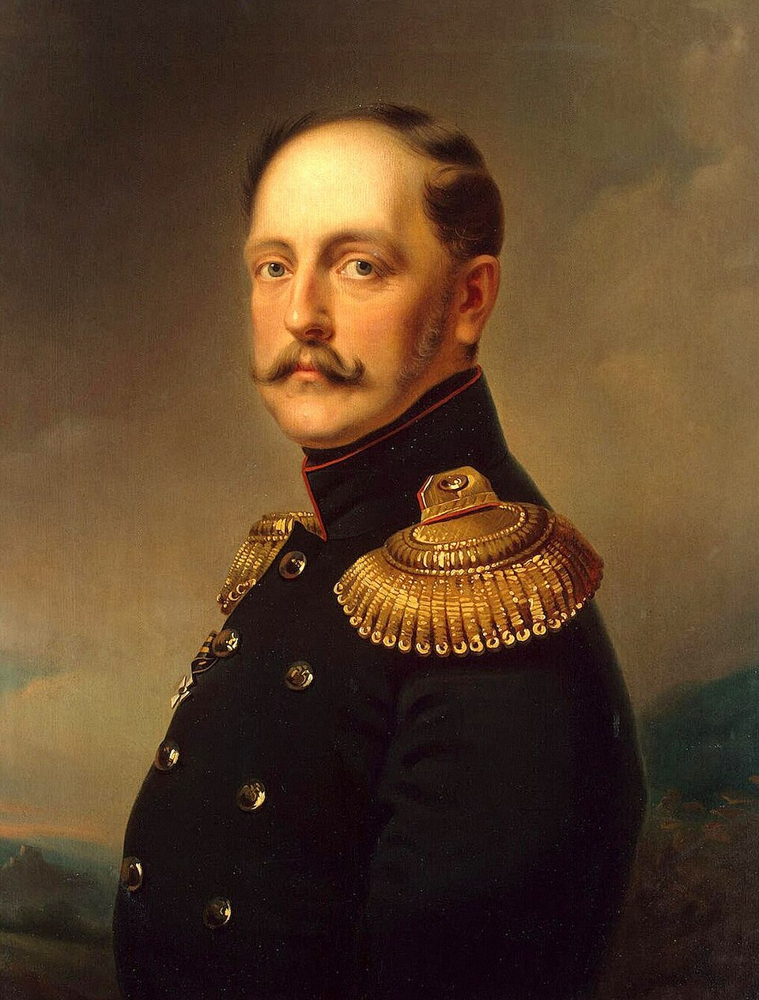
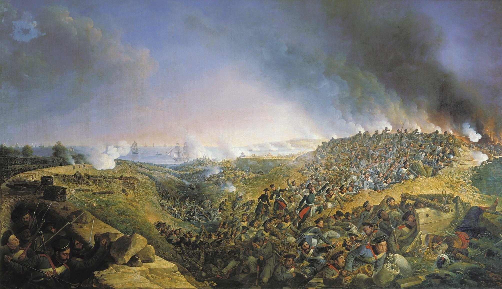

보스포러스 해협 이야기 (2) - Make France Great Again!
게시: 2026-02-12T06:30:20+09:00
러시아가 보스포러스-다다넬즈 해협을 뚫고 지중해로 나가기 위해 호시탐탐 오스만 투르크를 노리던 1850년 대, 프랑스에서는 희대의 코미디가 벌어지고 있었습니다. 당시 프랑스는 1848년 '유럽의 봄', 즉 대혁명의 해에 유일하게 혁명에 성공하여 루이 필립의 오를레앙 왕조를 엎어버리고 다시 공화정이 들어섰습니다. 그런데 그 대통령이 문제였습니다. 나폴레옹이 수많은 프랑스 젊은이들을 독일과 러시아에서 개죽음 시키고 폭망한 뒤 세인트 헬레나에서 죽은 지 27년이나 지났건만, 유럽 제1의 나라라는 허영심에 가득차있던 프랑스인들은 뜻밖에도 그 조카 루이 나폴레옹을 대통령으로 선출했던 것입니다. 뜻밖이라고 말한 것은 루이 나폴레옹은 삼촌으로부터 명석한 두뇌나 미래에 대한 비전 등은 쏙 빼고 허영심만 두 배로 물려받은 천방지축 무뢰배였기 때문이었습니다.

(루이 나폴레옹은 젊어서는 이탈리아 독립을 추구하는 낭만적 혁명가로 살다가, 1836년에는 위 그림에서처럼 스트라스부르(Strasbourg)에서 그 곳 수비대 일부와 짜고 쿠데타를 일으켰다가 실패하고 체포되기도 했습니다. 평생 제대로 된 직업이라고는 어머니와 망명 생활을 하던 스위스에서 몇 년 간 포병 장교로 복무한 것이 전부였습니다.) 프랑스는 이미 나폴레옹 시절의 프랑스가 아니었습니다. 나폴레옹 전쟁 직후인 19세기 초반, 프랑스의 인구 증가율은 "프랑스의 인구학적 예외" (French Demographic Exception)라고 불릴 정도로 낮았고, 산업화는 더뎠습니다. 그 결과, 프랑스는 이제 영국이나 러시아와 비교하여 인구나 경제 규모 등에서 떨어지는 나라가 되었을 뿐만 아니라, 언제나 두 수 이하로 보던 후진국 프로이센 등 독일 국가들에 따라잡힐 위기에 놓여 있었습니다. 아마 프랑스인들이 루이 나폴레옹을 대통령으로 뽑은 것은, 나폴레옹의 이름을 달고 나온 사람이니까 '프랑스를 다시 위대하게'(Make France Great Again)의 꿈을 이루어줄 것이라고 믿었던 것이 아닐까 합니다. 아마 당시 빗자루에 나폴레옹이라는 명찰을 붙여서 선거에 내보냈어도 당선되지 않았을까 합니다. 루이 나폴레옹은 자신에 대한 프랑스인들의 기대를 잘 알고 있었고, 그 기대를 이용한 건지 아니면 그 기대에 부합했는지는 잘 모르겠으나 아무튼 삼촌처럼 쿠데타를 일으켜 아예 황제 나폴레옹 3세로 즉위하고 제2 제정시대를 열었습니다. 그러나 황제에 즉위한다고 프랑스인들의 '위대한 프랑스'에 대한 갈증이 해소되는 것은 아니었습니다. 나폴레옹 3세는 카톨릭이 국교인 프랑스인들의 허영심부터 채워주기로 하고, 프랑스를 오스만 투르크 내의 모든 기독교인들의 주권자로 인정하라는 의미에서 베들레헴 예수 탄생 교회(Church of the Nativity)의 열쇠를 요구합니다. 문제는 그 열쇠는 당시 베들레헴의 러시아 정교회가 보관하고 있었다는 점이었습니다. 전에도 소개해드린 1774년 퀴취크 카이나르자 조약에서, 러시아는 자신의 상선이 다다넬즈-보스포러스 해협을 자유롭게 통과할 권리뿐만 아니라 오스만 투르크 내의 동방정교 교인들의 보호자라는 칭호를 얻었기 때문이었습니다. 어떻게 보면 별 것 아닌 호칭과 형식상의 문제였는데, 황제들 간의 자존심 싸움이 되자 이야기가 험악해졌습니다.

(18세기 후반 베들레헴 예수 탄생 교회의 지하 동굴(grotto)입니다. 당시 활동한 이탈리아-독일계 화가 루이기-마이어(Luigi-Mayer)의 작품입니다. 저 동굴에서 예수님이 탄생했다고 전해지는데, 베들레헴 예수 탄생 교회는 그 지하 동굴 위에 지어진 것입니다.)

(저 사진 속 왼쪽 멀리에 보이는 것이 오늘날 베들레헴 예수 탄생 교회의 모습입니다. 오른쪽에 보이는 큰 건물은 아르메니아 수도원 건물입니다. 이 교회의 위치 자체가 문제인 것이, 현재 팔레스타인 웨스트뱅크에 있습니다.)

(주변에 예수님을 철저히 부정하는 유대교 및 이슬람 신자들이 넘쳐나는 곳에서, 예수님 믿는 같은 기독교인들끼리는 사이가 좋을 것 같지만 전혀 그렇지 않습니다. 19세기 초중반은 물론 현대에도, 카톨릭과 동방정교(러시아 정교)는 예루살렘에서 꽤 험악하게 으르렁거린다고 합니다. 다만 예루살렘에서 기독교 사제들끼리 충돌했다는 저 2008년 기사는 카톨릭과 동방정교가 아니라, 아르메니아 교회와 동방정교의 충돌에 대한 기사입니다.) 불쌍한 것은 오스만 투르크였습니다. 프랑스와 러시아 두 강대국 사이에서 이리저리 말을 바꾸다가, 나폴레옹 3세가 최신예 증기추진 전열함 샤를마뉴(Charlemagne)를 거의 막무가내로 다다넬즈-보스포러스 해협을 뚫고 흑해에 진입시켜 무력 시위를 하자, 못 이기는 척 프랑스 손을 들어주었습니다. 프랑스 군함이 흑해에 진입한 것은 사상초유의 일이었을 뿐만 아니라, 1841년 맺은 런던 해협 조약(London Straits Convention), 즉 오스만 투르크를 제외한 그 어떤 국가도 다다넬즈-보스포러스 해협을 통과할 수 없도록 한 약속을 정면으로 위반하는 행위였습니다.

(샤를마뉴는 1834년부터 엑토르(Hector)라는 이름의 90문 짜리 전열함으로 건조되기 시작했으나 도중에 중단되었다가, 1850년부터 샤를마뉴라고 이름을 바꾸고 증기엔진을 장착하여 완성시킨 뒤 1851년 1월에 진수된 최신예함이었습니다. 배수량 약 4천톤에 4개의 보일러에서 약 900kW의 힘을 내는 스크루 추진선이었습니다. 그래봐야 속도는 돛을 펼쳤을 때와 크게 다르지 않아서 8노트였습니다. 무장은 90문에서 다소 줄어 80문이 되었는데, 그 중 30문은 폭발탄을 쏠 수 있는 펙상(Paixhans) 포로 되어 있었습니다. 펙상 포에 대해서는 다음 편에서 더 자세히 다루겠습니다.) 러시아는 다른 것은 다 참아도 다다넬즈-보스포러스 해협은 참을 수 없었습니다. 러시아의 짜르 니콜라이 1세는 런던 해협 조약이 위반되었으니 뭘 좀 해보라고 영국에게도 손을 뻗쳤지만, 영국의 반응은 시원찮았습니다. 그도 그럴 것이, 영국은 이미 프랑스가 아닌 러시아가 유럽대륙 최강의 국가라고 보고 있었고, 특히 러시아가 오스만 투르크에 대해 영향력을 행세하는 것에 대해 매우 불편하게 생각하고 있었습니다. 러시아가 오스만 투르크를 장악하게 되면, 인도로 가는 육로가 막힐 수 있다고 본 것입니다. 생각해보면 런던 해협 조약의 진짜 목적은 영국이나 프랑스가 흑해로 들어가는 것을 막으려는 것이 아니라 러시아가 지중해로 나오는 것을 막으려는 것이었으니 영국의 반응은 당연한 것이었습니다.

(니콜라이 1세는 나폴레옹을 무찌른 알렉산드르 1세의 동생으로서, 1812년 당시 16살의 나이였습니다만 나폴레옹 전쟁에서 별다른 참여는 하지 않았습니다.) NATO, 아니 서구의 이런 짜고 치는 고스톱에 분노한 러시아는 다시 만만한 오스만 투르크에게 눈을 돌려 협박질을 해댔습니다. 그러나 영국과 프랑스는 '만약 러시아가 무력 침공할 경우, 영국과 프랑스가 뒤를 봐줄 것이니 꿋꿋하게 버티라'고 이스탄불에 펌프질을 하고 있었습니다. 오스만 투르크로서도 언제나 자신의 영토를 야금야금 먹어들어오는 러시아와 언젠가는 또 한판 붙어야 하는데, 차라리 잘 되었다고 판단했는지, 강경하게 버텼습니다. 영국과 프랑스뿐만 아니라 만만한 호구 오스만 투르크까지 러시아를 무시하는 태도를 보이자, 러시아는 즉각 무력 행동에 나섰습니다. 오늘날 루마니아-불가리아에 해당하는 왈라키아 및 몰다비아 공국들은 비록 오스만 투르크의 영토지만 18세기 후반부터 러시아가 여러 차례 반쯤 점령했다가 조약을 맺고 오스만 투르크에게 반납하기를 반복했었는데, 1853년 6월에 다시 무려 8만의 병력을 왈라키아-몰다비아에 투입하여 점령해버린 것입니다. 다만 이 8만 중 절반 이상이 1년 안에 목숨을 잃게 되는데, 이유는 오스만 투르크군의 용맹이 아니라 바로 콜레라와 티푸스 때문이었습니다.

(이 그림은 1853년 크림 전쟁을 묘사한 것이 아니라, 1828년 러시아가 또 왈라키아-몰다비아를 침공했을 때 벌어진 바르나(Varna) 포위전을 그린 것입니다. 바르나는 흑해 연안에 있는 오늘날 불가리아에서 세 번째로 큰 도시인데, 당시 오스만 투르크는 약 1만2천의 수비 병력으로 지키고 있었고, 러시아는 4만의 병력과 8척의 전열함을 주축으로 하는 흑해 함대를 띄워서 공격했습니다. 결국 2달 간의 포위전 끝에 러시아는 바르나의 항복을 받아내기는 했지만, 러시아군도 6천이 넘는 사망자를 냈고, 결국 여기서 철수해야 했습니다. 이때도 전투 못지 않게 병사자가 많았습니다.) 일이 이렇게 되자 영국과 프랑스는 오스만 투르크에게 큰 소리 친 것도 있고 해서 뭐라도 하긴 해야 했는데, 지켜주겠다고 말로 큰 소리 치는 것과 실제로 병력과 함대를 보내는 행동에 나서는 것은 완전히 다른 문제였습니다. 대체 영국과 프랑스가 왜 머나먼 흑해 연안에 가서 자신의 피를 흘려가며 이교도인 오스만 투르크의 땅을 지켜줘야 하겠습니까? 영국과 프랑스는 대포 대신 말로 문제를 해결하려고 했습니다. 특히 러시아는 프로이센과 오스트리아 등 빈 체제의 옛 동맹국들과 국경을 맞대고 있었습니다. 영국과 프랑스는 러시아에 대한 선전포고 대신, 프로이센과 오스트리아를 통해 러시아에게 압박을 넣었습니다. 그러나 이 모든 것을 발칵 뒤집어 놓는 사건이 흑해 안에서 벌어집니다. 이로 인해 영국과 프랑스는 정말로 머나먼 흑해 안에 들어가 피를 흘리게 됩니다.